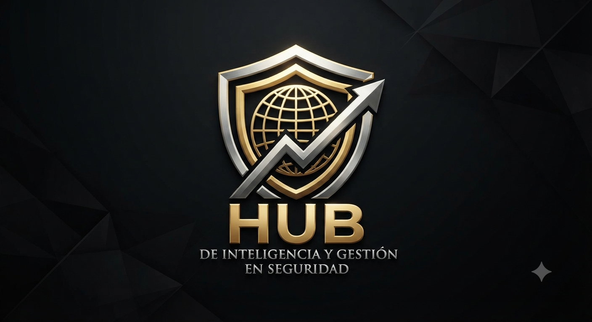

Somos una consultoría intelectual independiente especializada en inteligencia, gestión y seguridad para organizaciones que exigen trazabilidad auditable. Integramos tres direcciones complementarias: estrategia con marco jurídico, operación de campo e inteligencia operativa.
Lectura independiente del estado real de tu seguridad: competencias, desempeño de prestador, vulnerabilidades físicas, eficacia tecnológica y cumplimiento normativo.
Contraloría de pérdida interna y auditoría forense de proveedores con entregables firmados, KPIs medibles y evidencia trazable.
Capacitación especializada y acompañamiento para que tu operación internalice el método y alcance autonomía operativa.
No vendemos horas-hombre de guardias, no vendemos equipos y no operamos servicios regulados. Vendemos inteligencia y procesos con trazabilidad auditable. Nuestro valor se instala en tu organización como un sistema completo: personas con criterio, procesos verificados y tecnología alineada a tu riesgo real.